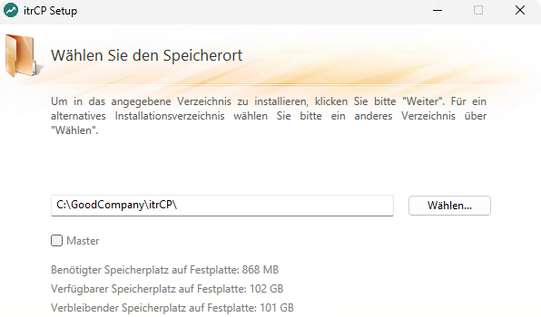
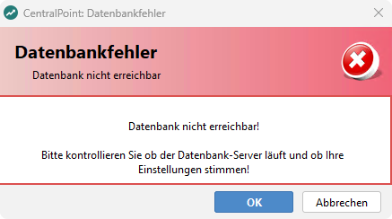
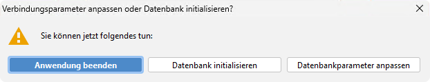
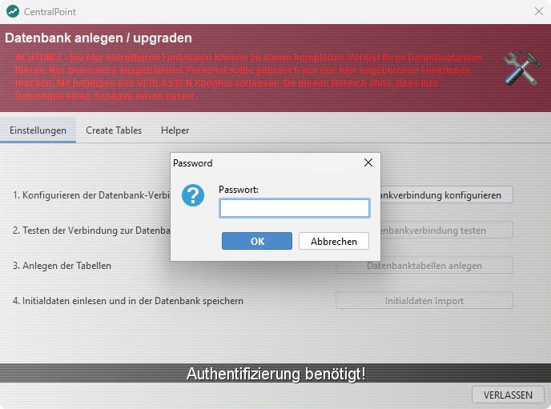
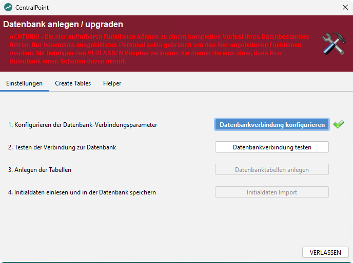
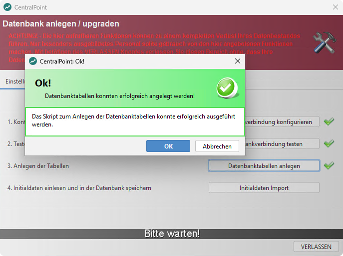
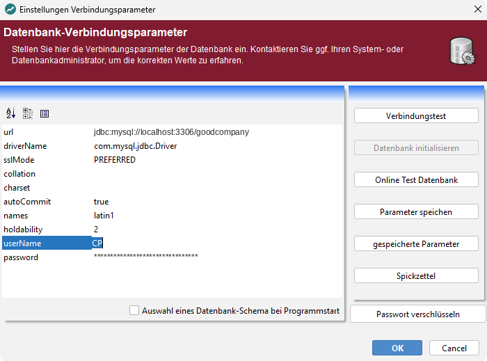
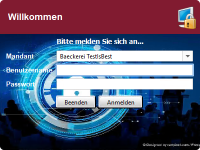

CentralPoint installieren
Der CentralPoint ist der zentrale Server der Installation: Er verwaltet Stammdaten, Kassendaten, Lizenzen und Berichte und verteilt Änderungen an die Filialen.
Voraussetzungen
- Server nach ITR Partner Service → Betrieb & Administration → Systemvoraussetzungen.
- Ein eingerichteter Datenbankserver mit Schema und Benutzer — siehe ITR Partner Service → Produkte → Datenbank für den CentralPoint einrichten.
- Lizenz aus dem Partner-Portal.
- Power-User-Passwort für die Datenbankeinrichtung. Sie erhalten es über den zuständigen Support.
So gehen Sie vor
- Installationspaket aus dem Partner-Portal laden. Es heißt
Setup-itrCP<Version>_….exe. - Setup ausführen. Standardverzeichnis ist
C:\GoodCompany\itrCP\. Im Dialog Wählen Sie den Speicherort das Kontrollkästchen Master nach dem Abschnitt Masterrolle setzen oder leer lassen. - CentralPoint starten und die Meldungen beim ersten Start bestätigen — siehe Erster Start.
- Datenbank einrichten: neue, leere Datenbank initialisieren oder mit einer bestehenden Datenbank verbinden — siehe unten.
- Anmelden und das voreingestellte Passwort ändern — siehe Erste Anmeldung.
- Anwendung registrieren und die Lizenz aktivieren, siehe ITR Partner Service → Produkte → Lizenz aktivieren.

Masterrolle
Die Masterrolle übernimmt der ERPSyncer, der die Daten mit der ERP Cloud abgleicht.
- CentralPoint tauscht Daten mit der ERP Cloud aus: Master bei genau einer Installation anhaken.
- Ohne ERP Cloud: Die Einstellung hat keine Bedeutung.
Es darf nur einen Master geben. Ein zweiter Master erzeugt inkonsistente Daten. Bei jeder weiteren Installation Master nicht anhaken.
Erster Start
Beim ersten Start sucht der CentralPoint die vorbelegte Demo-Umgebung. Die folgenden Meldungen sind bei einer Neuinstallation normal:
- Die Meldung Datenbank nicht erreichbar! erscheint dreimal. Jeweils mit OK bestätigen.
- Die Meldung Fehler beim Verbindungsaufbau mit der Datenbank mit OK bestätigen.
- Im Fenster Verbindungsparameter anpassen oder Datenbank initialisieren? wählen:
- Datenbank initialisieren — bei einer neuen, leeren Datenbank.
- Datenbankparameter anpassen — für die Verbindung zu einer bestehenden Datenbank.


Datenbank initialisieren
Für eine neue, leere Datenbank. Nach Datenbank initialisieren fragt der CentralPoint nach dem Power-User-Passwort und öffnet das Fenster Datenbank anlegen / upgraden.

Die Funktionen in diesem Fenster können den gesamten Datenbestand löschen. Nur auf einer neuen, leeren Datenbank ausführen. VERLASSEN schließt das Fenster ohne Änderung an der Datenbank.
Die Schritte nacheinander ausführen. Jeder erledigte Schritt erhält einen grünen Haken, erst dann ist der nächste anklickbar.
- Datenbankverbindung konfigurieren — öffnet das Fenster Einstellungen Verbindungsparameter, siehe Verbindungsparameter.
- Datenbankverbindung testen — bei richtigen Angaben meldet der CentralPoint, dass die Verbindung steht und das Skript zum Anlegen der Tabellen gefunden wurde.
- Datenbanktabellen anlegen — Meldung Datenbanktabellen konnten erfolgreich angelegt werden!
- Initialdaten Import — optional, übernimmt Standarddaten wie Orte, Postleitzahlen und Vorwahlen. Kann übersprungen werden.
- VERLASSEN — beendet die Initialisierung.


Danach den CentralPoint über die Verknüpfung im Startmenü erneut starten.
Bestehende Datenbank verbinden
Für eine bereits eingerichtete Datenbank: im Fenster Verbindungsparameter anpassen oder Datenbank initialisieren? die Schaltfläche Datenbankparameter anpassen wählen. Es öffnet sich das Fenster Einstellungen Verbindungsparameter. Später erreichen Sie die Einstellungen über Programm → Einstellungen.
Verbindungsparameter
Im Fenster Einstellungen Verbindungsparameter diese Felder eintragen, die übrigen unverändert lassen:
Feld | Inhalt |
|---|---|
url |
|
userName | der bei der Datenbankeinrichtung angelegte Benutzer, üblich |
password | dessen Kennwort |
Das Kennwort muss nach der Eingabe über die Schaltfläche Passwort verschlüsseln gesichert werden. Ohne die verschlüsselte Form kommt trotz sonst richtiger Angaben keine Verbindung zustande.
Danach Verbindungstest klicken. Bei richtigen Angaben erscheint Der Verbindungstest zur Datenbank war erfolgreich! Meldung und Fenster mit OK schließen.

Erste Anmeldung
- Im Anmeldefenster den voreingestellten Mandant übernehmen. Er lässt sich später unter Stammdaten → Mandant anpassen.
- Mit Benutzername
testund Passworttestanmelden. - Das Passwort sofort ändern: unter Stammdaten → Mitarbeiterliste den Benutzer
testbearbeiten.
Mit dem voreingestellten Zugang test / test kann sich jeder anmelden. Das Passwort direkt nach der ersten Anmeldung ändern.

Ergebnis prüfen
- Der Verbindungstest ist erfolgreich.
- Das Schema enthält die Tabellen.
- Die Anmeldung gelingt mit dem geänderten Passwort.
- Der CentralPoint startet ohne Fehlermeldung und zeigt die lizenzierten Module.
Protokolldateien
Zweck | Pfad |
|---|---|
Konfiguration der Protokollierung |
|
Standardprotokoll |
|
Protokoll im Benutzerkontext |
|
Terminalserver und mehrere Benutzer
Für den Betrieb des CentralPoint auf einem Terminalserver oder in einer Mehrbenutzerumgebung besteht keine Gewährleistung. Die Verantwortung liegt beim Systemadministrator.
Bei einem Update von einer Version vor 5.36 ist zu beachten: Das Konfigurationsverzeichnis wandert von %appdata%\it relations GmbH\itrcp\xml nach %programdata%\it relations GmbH\itrcp\xml. Beim ersten Start verschiebt der CentralPoint das alte Verzeichnis samt Berechtigungen — das gelingt nur für den ersten Benutzer, alle weiteren haben danach keine Rechte.
Abhilfe:
- Das alte Verzeichnis unter
%appdata%für jeden Benutzer löschen. - Das neue Verzeichnis unter
%programdata%für alle Benutzer freigeben. - Sicherstellen, dass alle Benutzer die nötigen RDP-Berechtigungen haben.
@echo off
rd /s /q "%appdata%\it relations GmbH\itrcp"
icacls "%programdata%\it relations GmbH\itrcp" /grant *S-1-1-0:(R)Ausnahme bei mehreren Datenbankschemata: Dort muss der Anwender die Datei ändern dürfen, weil die gewählte Datenbank in die connection.xml geschrieben wird. Sonst lädt der CentralPoint trotz Auswahl immer dasselbe Schema. In dem Fall statt (R) die Berechtigung (M) vergeben.